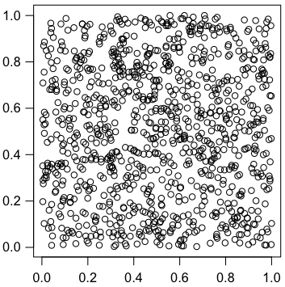

登場人物はすべて架空の人です。

相関係数の検定と χ2 検定とは，右図が示すように，別のものを見ている。したがって，相関係数の検定
> cor.test(1:6, x)
で求めた p = 0.016 で何ら問題ない。
なお，右図は次のようにして描いた。
ni = 1000
p = numeric(ni)
q = numeric(ni)
for (i in 1:ni) {
s = numeric(6)
for (j in 1:4826) {
k = sample(1:6, 1)
s[k] = s[k] + 1
}
p[i] = chisq.test(s)$p.value
q[i] = cor.test(1:6, s)$p.value
}
> mean(p <= 0.05)
[1] 0.047
> mean(q <= 0.05)
[1] 0.047
> par(las=1)
> par(mgp=c(2,0.8,0))
> plot(p,q,asp=1,xlab="",ylab="")
度数データ（一般に整数データ）の（Pearsonの）相関係数には注意が必要。例えば6個のイベントを3個のビンに投げ込む場合，(1,2,3) とか (0,2,4) あるいはその逆順は頻繁に生じる。これらと 1:3
の相関係数を求めると，p = 0
になり，有意になりすぎる：
> cor.test(1:3,1:3)
Pearson's product-moment correlation
data: 1:3 and 1:3
t = Inf, df = 1, p-value < 2.2e-16
alternative hypothesis: true correlation is not equal to 0
sample estimates:
cor
1
順位相関係数ならこういうことは起きない。Pearsonの相関係数を使いたい場合は，並べ替え検定でより正確な p 値を求めることができる：
x = c(762,792,795,794,849,834)
としておいて
y = replicate(10000, cor(1:6, x[sample(6)])) # 数はできるだけ多く
またはより正確には
library(gtools)
n = factorial(6)
y = numeric(n)
p = permutations(6,6)
for (i in 1:n) y[i] = cor(1:6, x[p[i,]])
そして最後に
mean(abs(y) >= abs(cor(1:6,x)))
とすると，p = 0.022 となり，A君の主張より大きくなる。
相関係数の検定では，ほとんど増加のない場合でも，一定の割合で増加すれば，非常に有意になってしまう。通常の回帰分析ではなく，Poisson分布を帰無仮説として年ごとの増加率を検定しなければならない。
> x = c(762,792,795,794,849,834)
> lm(x ~ seq(6))
とすれば，増加率が 15.14 件/年 であることがわかる。Poisson分布の乱数で同じことをしてみて，増加率の絶対値が偶然に 15.14 以上になる確率を求めて検定するのが正しい。
x = c(762,792,795,794,849,834)
m = mean(x)
ni = 1000000 # もっと小さくてよい
r = numeric(ni)
for (i in 1:ni) {
r[i] = lm(rpois(6,m) ~ seq(6))$coefficients[2]
}
r1 = lm(x ~ seq(6))$coefficients[2]
mean(abs(r) >= abs(r1))
結果は p = 0.025 ほどになり，B君の結果よりさらに大きくなる。
それならPoisson回帰をすればいい。
線形の場合：
r = glm(x ~ seq(6), family=poisson(link="identity"))
summary(r)
p = 0.0253
リンクが対数の場合：
r = glm(x ~ seq(6), family=poisson(link="log"))
summary(r)
p = 0.0255
Last modified: 2009-03-02 10:07:55